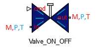

1.3 Valve ON/OFF 

a. Description
This component is a needle ON/OFF valve, it's a common valve
with two state : open (ON) or close (OFF)
- The valve imposes mass flow rate at its inlet
- The valve imposes both mass flow rate and
temperature at its outlet
b. Instructions
To ensure compilation, you must respect the following points :
- The opening of the valve ( C ) must be 0 or 1
- Connect to the inlet of the valve a component that
impose both temperature and pressure
- Connect to the outlet of the valve a component that
impose the pressure
- The CVmax, Xt and Rv parameters must be greater
than 0
©2015 The PI-02